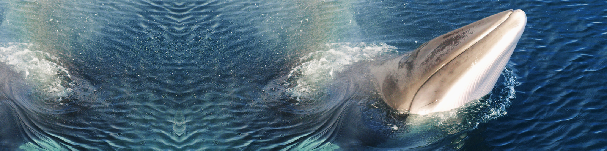

I like animals. A review of my posts will reveal a certain propensity towards engaging in animal related travel experiences and copious amounts of photos featuring cute wildlife. I try to be careful though when I travel, selecting what I hope and believe to be responsible animal activities that help rather than harm. I’ve learned my lesson in the past when I did not choose wisely and it’s my mission to not only practice sustainable tourism practices but to help other people figure out what is and what is not responsible travel. That’s why I was somewhat flummoxed when I visited Iceland.
Iceland is a popular travel destination for any number of reasons. For Europeans and North Americans it’s very easy to get to and thanks to some great airline promotions, it’s fairly inexpensive to visit. It’s also a beautiful country with improbably dramatic landscapes and terrain that seem to come straight out of a George R. R. Martin novel. It’s also an isolated island, located in the chilly North Atlantic and traditionally ignored by everyone except for some Vikings and opportunistic Danish sailors. This isolation created a unique and undeniably hearty food culture that at times can be at odds with the rest of Western society.
I have no problem accepting that other cultures find certain foods attractive which I may find repugnant. For all I know there’s a group of people out there retching every time I talk about grilled cheese sandwiches. (Although come on, who doesn’t love a good grilled cheese?) That’s fine, I get it. The problem for me is that in Iceland, most of the preparation of ‘exotic’ foods seems to be geared in part if not completely towards the tourist sector.
There are three foods in particular to which I refer: Minke whale, horse and puffin. I mentioned my abhorrence to whale consumption in one of my first posts about Iceland and a number of Icelanders commented saying that it was an important part of their heritage. That’s fine, I get it as I just acknowledged. My problem is the marketing of the whale meat to tourists. Food purveyors in Iceland know that tourists will find whale meat to be exotic and almost impossible to find anywhere else in the world thanks to international bans on the hunting and consumption of whale. Therefore these same proprietors know that they will almost always be able to sell whale meat to curious tourists. Yet, in spite of the global distaste towards consuming whale, tourist restaurants in the middle of downtown Reykjavik feature whale prominently and in several ways on menus.
The presence of this controversial protein in tourist centers seems to fly in the face of people who say that mostly Icelanders consume whale meat as part of a normal diet. While I’m sure that’s true, there is no reason then to try to promote it to non-local diners. The same can be said of puffin and of the incredibly cute Icelandic horse.
Icelandic horses are a unique breed, smaller than most horses, almost pony-like, hearty and long lived, and are an important feature of the Icelandic landscape. Eating horse isn’t endemic to Iceland, it happens around the world, but for many people this is an area of moral ambiguity. I can’t imagine after encountering an Icelandic horse for the first time that you’d then want to consume this cute and cuddly creature, but that’s just me.
Which brings me to the main point (finally!) of this post, the morality of eating in Iceland. From my point of view, the issue of whale consumption is a no brainer. If the Icelandic people want to eat whales, fine, let them. There are only 300,000 people living in Iceland and really, how much could they possibly eat? The problem comes with the tourist trade. If we as tourists want to help protect whale populations, then we must not eat whale in Iceland. It’s as simple as that. As demand decreases so will the hunting until, hopefully, one day it will stop completely. I’m not basing this on any empirical evidence, but my instinct tells me that if every tourist stopped eating whale meat in Iceland, whale hunting would disappear within a few years.
Puffin and horse are more ambiguous areas of digestive etiquette. Although puffins are not an endangered species, their numbers have been steadily declining in recent years both in North America as well as Northern Europe. That’s why I’m a little confused as to why anyone would choose to eat them. This isn’t the 14th century; there are plenty of protein choices out there and if it means helping to preserve a species then I think I’ll opt for the chicken with my next meal. But that’s just me and if someone can make a strong argument in favor of eating puffin, I will listen.
Finally, the poor Icelandic horse. A friend of mine recently returned from Iceland proudly displaying photos of a horse steak he consumed in Reykjavik. I was shocked and a little disgusted. He quickly tried to calm me by saying that some of the horses are specifically bred for food. That didn’t help. I do acknowledge though that this is very much a cultural issue and eating horsemeat is acceptable in many parts of the world. In North America it tends to be considered very taboo, and the very thought disgusts me. I did a little research though and found that a big problem with the former horse butchering industry here in the United States was the preponderance of slaughter-related cruelties that happened during the butchering process. That simply fed into an already well-established taboo and led to the banning of the practice in the U.S. Still, it ruffles my ethical feathers to see anyone eating horse.
And that’s ultimately the issue here, isn’t it? The ethics and morality of eating whale seems to be fairly black and white, but that’s only because most of the world has accepted the fact that we need to preserve all species of whale. When we start talking about puffins and horses though, this coalition begins to fracture along strict cultural lines.
Ultimately, the best that we as tourists can do is to always stay true to our own individual sets of moral and ethical guidelines. If we want to stop whale consumption, then we need to first stop consuming whale. I’m also not saying that I’m a better person because I don’t eat cute diminutive horses, I’m not, I’m just different. But regardless of your cultural taboos, I do think it’s important to think about these things before traveling and to know where your moral center lies well before the waitress first asks if you want whale or horse for dinner.